Luiz Furtado | Fullstack Developer


Natural do interior de São Paulo (Sete Barras), tenho 35 anos e moro em Curitiba a 15 anos. Trabalho na área de TI a 14, mas só comecei a 3 anos a me interessar e realmente começar a estudar programação. Passei pelo C# e .Net, mas no momento estou 100% dedicado ao estudo de JavaScript, especialmente NodeJS e ReactJS.
Sou casado a três anos, e vivo com minha esposa e dois gatinhos! O Elvis e a Penélope. Sou muito caseiro e passo a maior parte do meu tempo livre lendo, ouvindo música e claro, estudando bastante para dar o pontapé inicial na minha carreira de programador!
Entre em contato e me acompanhe nas redes sociais